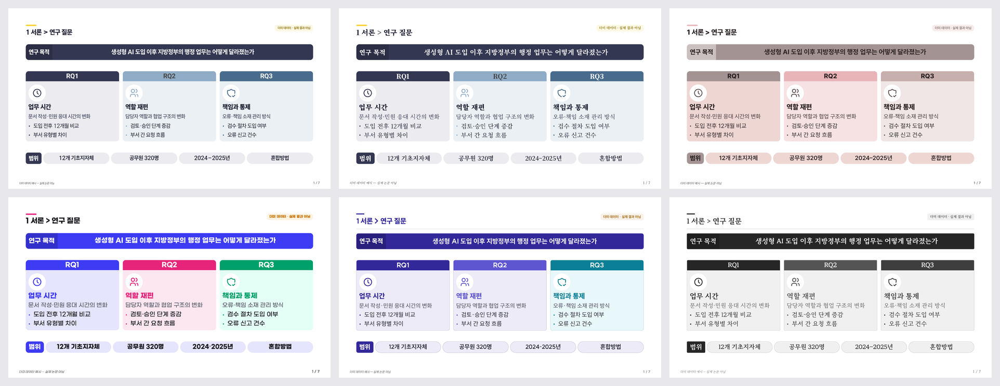
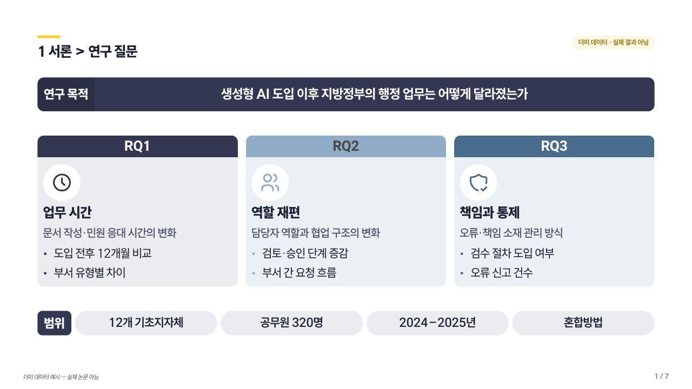
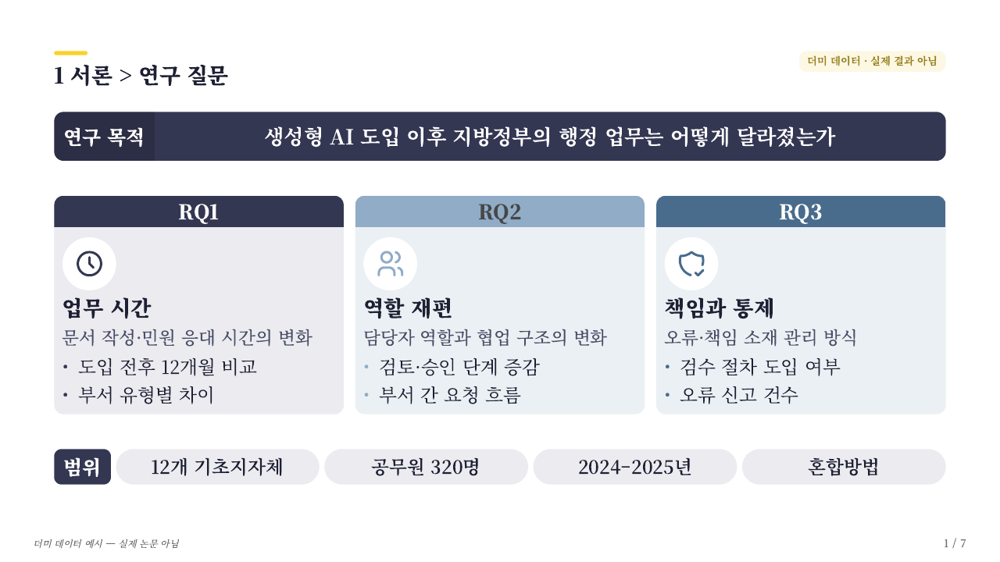
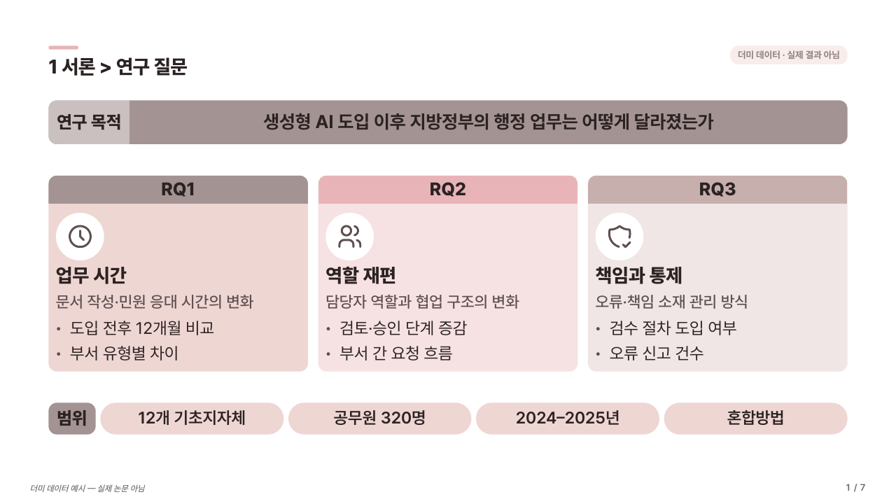
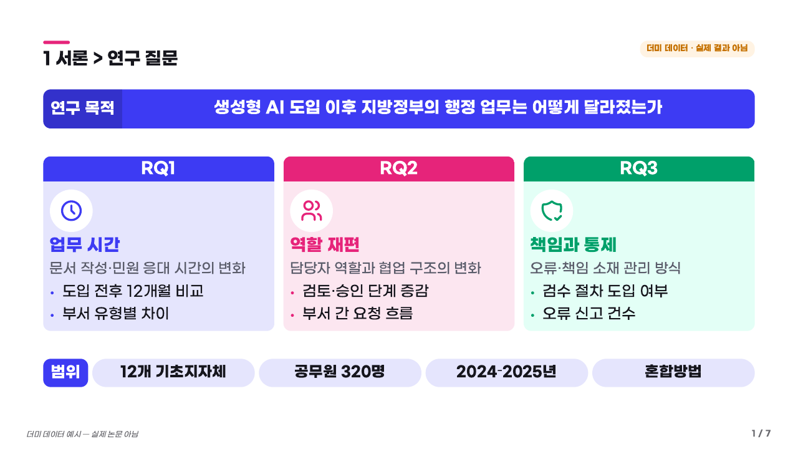
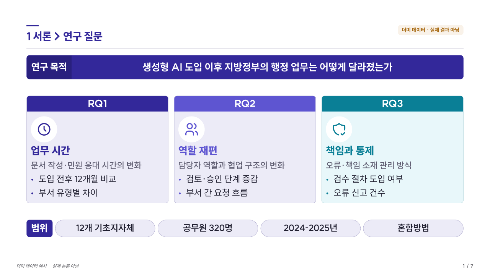
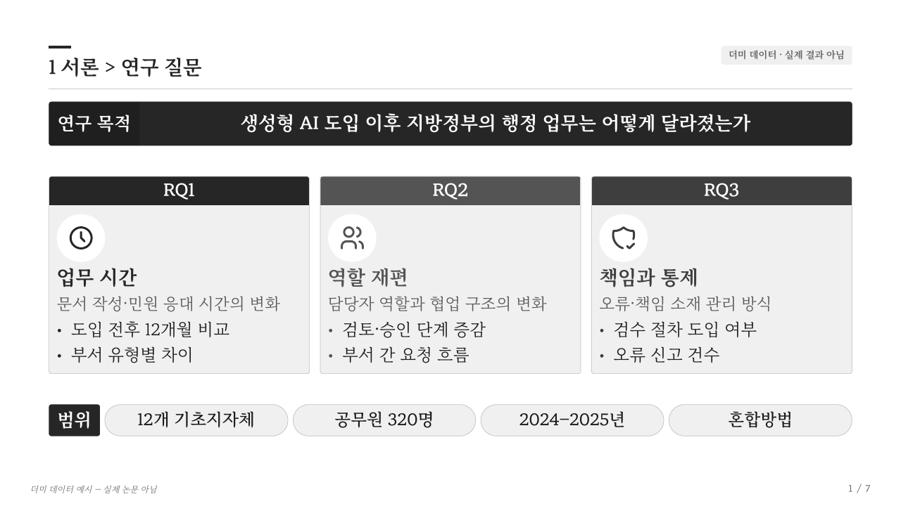

더미 데이터로 만든 7쪽 샘플을 컬러 컨셉·글꼴별로 모았습니다(실제 논문·연구 결과 아님). 카드를 누르면 16:9 덱이 열리고, 작은 그림을 누르면 페이지 이미지가 열립니다.
같은 설계 파일(examples/jf-demo/*.json)에 프리셋과 글꼴만 바꿔 jf_build_deck.py로 만들었습니다.

색상·글꼴 바꿔 보기같은 7쪽을 아래 선택 상자로 컬러차트 28색·내용 계열·흑백과 웹폰트 12종(고딕 6·명조 6)으로 바꿔 가며 봅니다 →




